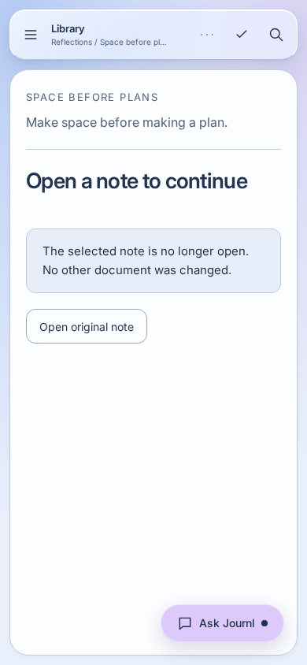
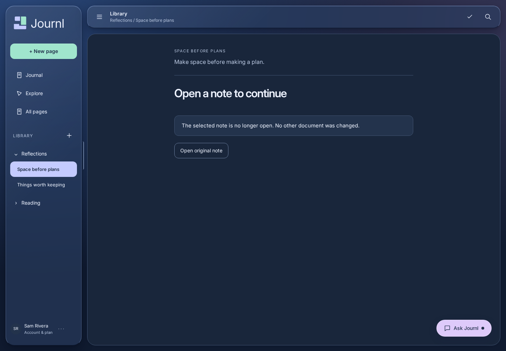
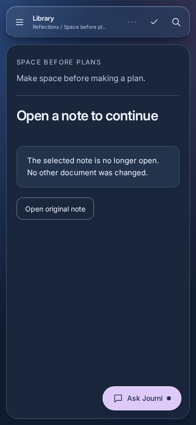

Editor
Approved application · approved logoEvery image below is an actual canonical PNG. Open an image for its full resolution. These are authored design scenes, not current-app browser captures.
Open a note to continue
ai-review-no-targetActions and implementation pointers
+ New page · Journal · Explore · All pages · ⌄ · Reflections · › · Reading · Open original note · Ask Journl · Today’s Journal · Close · Instant · Thinking
docs/editor-inventory/README.mdapps/web/src/ai/tools/write/client.tsapps/web/src/ai/tools/apply-changes/client.tsapps/web/src/ai/tools/reject-changes/client.ts


SHA256 4399690f7e749c651be43f034a46c6732705710d984c2ab08defc2c48e0037a9

SHA256 d41f5608378e037879d155ccf462ed5f127bf2aa2352e08fbb14751d18a4f27a


SHA256 9ce307a115ffb62306215828bbd2813329afb5ff02beeecbbf37a12dd232a0bd


SHA256 e4428c3fc8a5d0e75534dee626c599e89ab42cda8098345fa36c3596c7de99e0